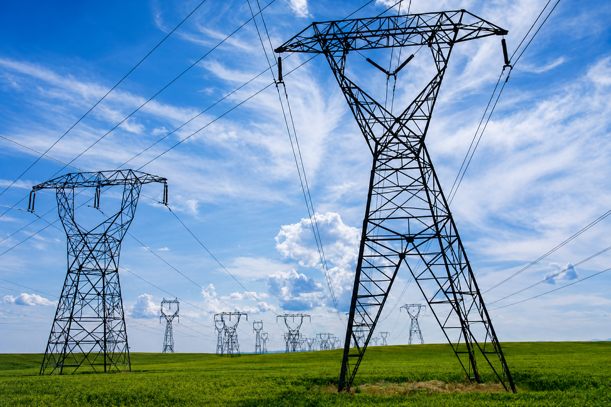
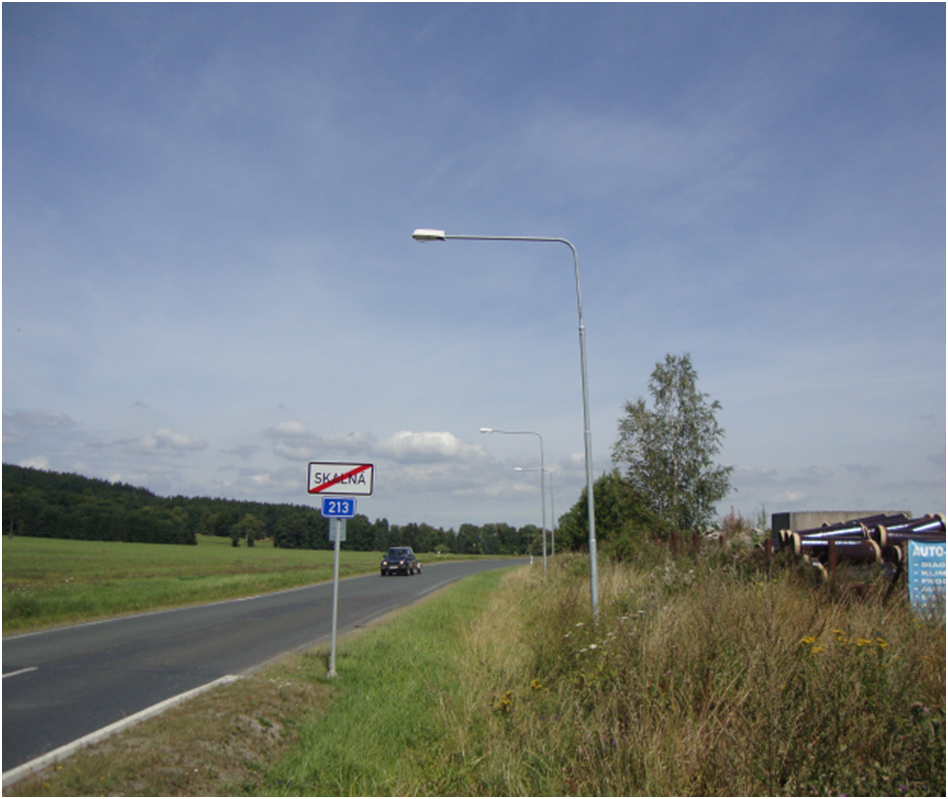
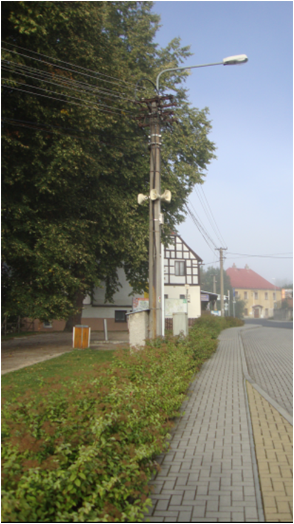
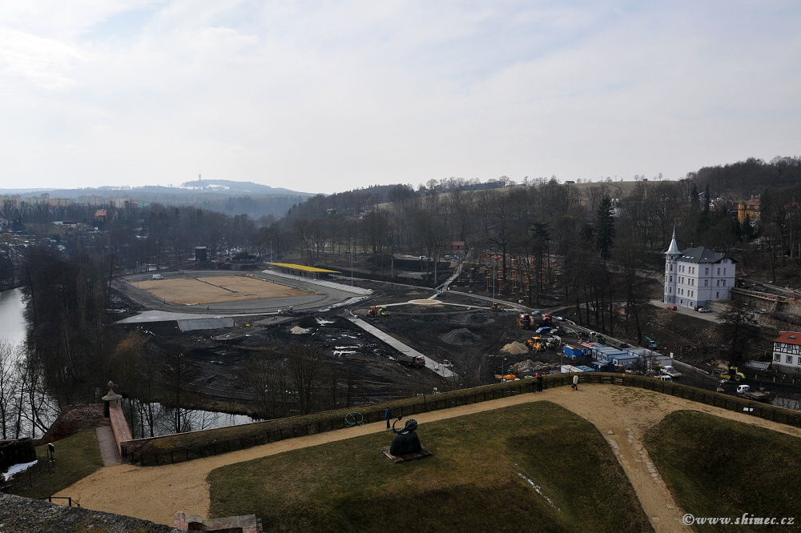
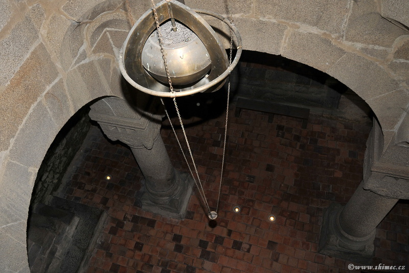

Vysoké napětí (VN)
Samostatné montážní týmy s oprávněním pro stavebně-montážní práce vysokého napětí v Karlovarském kraji i mimo něj.
Naše činnost je zaměřena především na stavebně montážní práce. Pro jejich realizaci máme samostatné montážní týmy, které mají potřebné oprávnění pro danou činnost a jsou plně mobilní. Jsme schopni realizovat zakázky v celém Karlovarském kraji, výjimečně po celé ČR. Mezi oblasti naší činnosti spadá výstavba nových, oprava či rekonstrukce stávajících zařízení:
- stožárové trafostanice 22/0,4 kV
- technologické části distribučních a průmyslových trafostanic 22/0,4 kV (35/0,4 kV)
- stavební části trafostanic, zednické výpomoci
- nadzemní distribuční sítě, včetně přípojek nízkého i vysokého napětí
- kabelová vedení nízkého i vysokého napětí, včetně přípojek
- sítě veřejného osvětlení (kabelové i na stožárech rozvodných sítí NN)
- montáž kabelových souborů vysokého napětí (RAYCHEM, CELPAK)
- dodatečná izolace vodičů vysokého napětí, systém RAYCHEM
- montáže izolovaných vedení vysokého napětí (SAX, PAS)
- související zemní a stavební práce, definitivní zádlažby
Pracovníci jsou pravidelně školeni z bezpečnostních předpisů a technologických postupů dle vyhlášky č. 50/1978 Sb. o odborné způsobilosti v elektrotechnice. Při realizaci jednotlivých zakázek jsou vybaveni předepsanými ochrannými pomůckami a potřebným speciálním nářadím.




